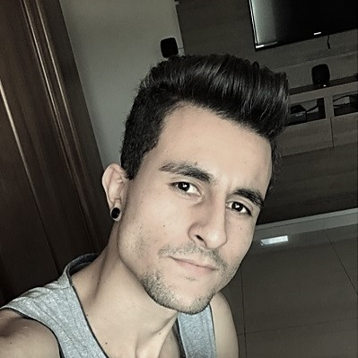

- Home
- >
- Currículo
Currículo
Dados Pessoais

Nome:
Edson Pereira Neto
Data de Nascimento:
10/05/2000
Residência:
São José do Alegre, MG
Idiomas:
Português (Nativo)
Inglês (Avançado)
Sobre Mim
Em 2018, iniciei minha primeira graduação no curso de Matemática Licenciatura - UNIFEI, na qual cursei durante dois anos, e durante todo esse tempo eu pude me dedicar muito, além disso, como forma de vivenciar a carreira profissional de um professor, me inscrevi no projeto PIBID em abril de 2018 e fui aprovado, iniciando assim as atividades em agosto do mesmo ano.
O projeto tem por objeto inserir os alunos da graduação dos cursos de licenciatura da UNIFEI em alguma escola municipal de Itajubá que participa do projeto, sendo assim, participei de todo o projeto, finalizando todas as atividades no final de 2019, e posso dizer aprendi muito em relação a ministrar uma sala de aula, se portar e falar em público, em relação às responsabilidades, e principalmente saber lidar com pessoas.
Além disso, com toda a vivência nesse projeto, pude perceber que não era aquele tipo de trabalho que eu queria por toda minha vida, logo, estudei para o vestibular para o curso de Engenharia de Controle e Automação, e fui aprovado no início de 2020, e posso dizer que foi uma das melhores escolhas da minha vida.
Educação
2020-Em andamento
Engenharia de Controle e Automação - UNIFEI
2018-2019
Matemática Licenciatura - UNIFEI
Experiência em Projetos
2018-2019
Projeto Institucional de Bolsistas de Iniciação a Docência - PIBID
Contato
edson_neto2018@unifei.com
(35) 98417-1467
↩ Ir para Home